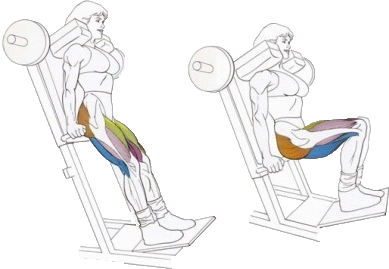

Приседания в гакк-тренажере прорабатывают преимущественно квадрицепс и снижают нагрузку на спину.
Шириной постановки ступней можно добиться дополнительного акцента на боковой поверхности бедер.
Исходное положение:
Прижать поясницу к подвижной платформе.
Взяться руками за поручни.
Ноги расположить на наклонной платформе.
Техника выполнения:
Присесть как можно ниже.
Вернуться в исходное положение.
Рекомендации:
Упражнение выполняется плавно и размеренно.
В верхней точке колени не разгибаются полностью.
Должна ощущаться нагрузка именно на квадрицепсы, а не на коленные суставы.
Нельзя округлять грудь и выходить коленями за линию носков.
Шириной постановки ступней можно добиться дополнительного акцента на боковой поверхности бедер.